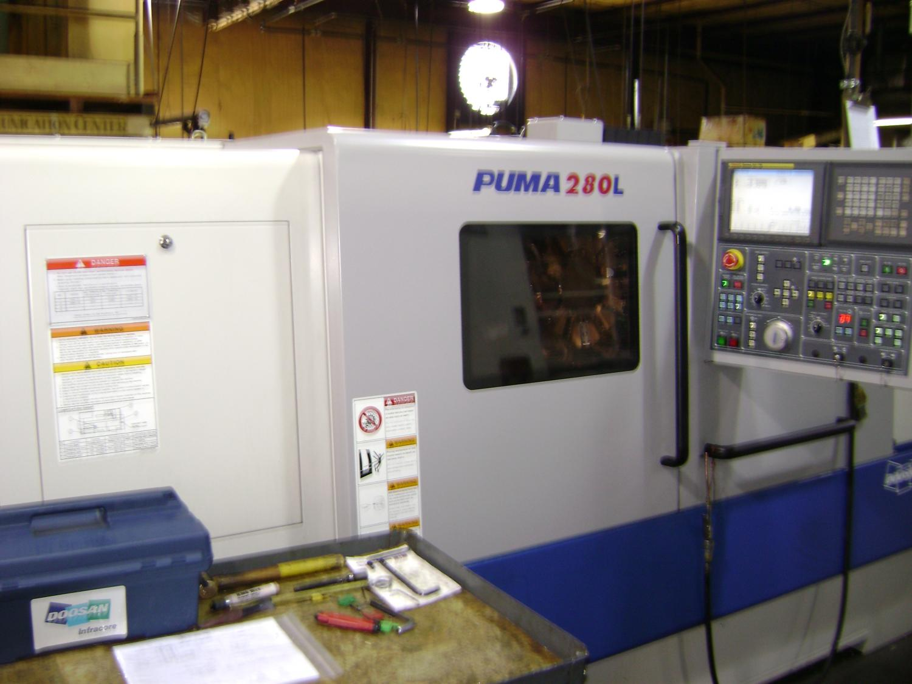

01 / Machining data sheet
PUMA 280L
Turning Center
The Puma series is designed for heavy duty interrupted cuts, producing superior surface finishes while maintaining consistent tolerances.
| Maximum turning length | 42″ |
|---|---|
| Recommended turning diameter | 10″ |
| High pressure coolant | 1,000 PSI |
| X & Z axis travel | 9.5″ – 43.3″ |